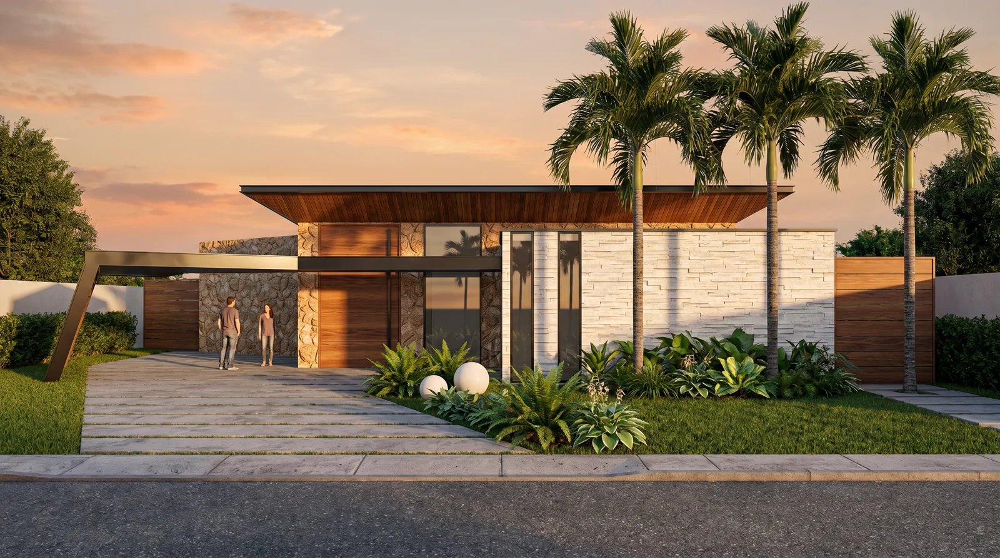

Visualización arquitectónica para vivienda, comercio y espacios corporativos.
No están todos: están los que mejor explican el oficio. Pase el cursor sobre cualquiera para ver de qué se trata.
El proyecto se levanta en Revit con elementos reales, no volúmenes decorativos. De ahí salen cortes, plantas y cantidades coherentes entre sí.
Los planos arquitectónicos acompañan la entrega, alineados con el mismo modelo que produjo los renders.
Formación en ingeniería civil, UPB Bucaramanga. Las luces, los espesores y los apoyos que se dibujan son construibles.
Herramientas construidas para resolver problemas concretos de obra y de gestión. Todas en uso real.
Gestión de obra con asistencia de IA, pensada para funcionar con señal pobre en campo.
Calculadora de cantidades de obra por capítulos. Sin dependencias, abre en cualquier navegador.
Suite financiera: control de proyectos, costos y flujo de caja en un solo tablero.
Automatización que recibe reportes por WhatsApp, los estructura con IA y los archiva en Drive.
Envíe los planos o un boceto y le indico alcance, tiempo y valor. Respuesta el mismo día.